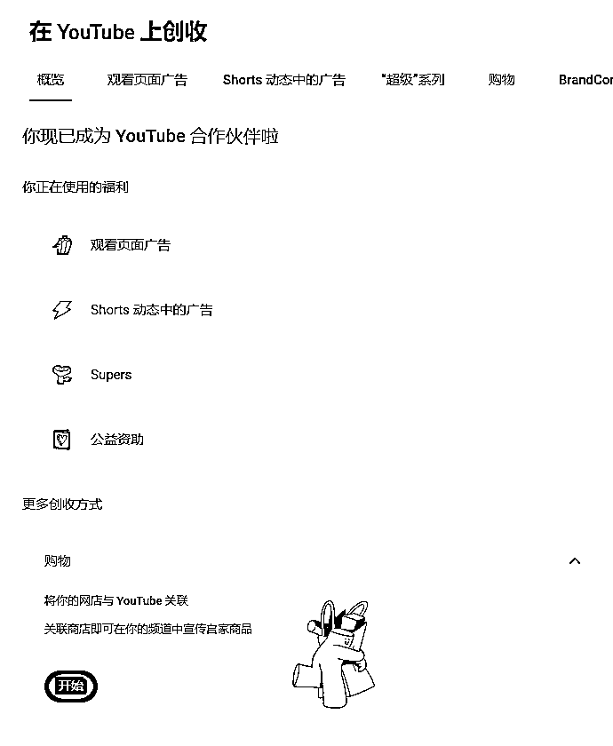

来源：https://ncnmu5q1eqm9.feishu.cn/docx/TFiJdd9TcoELvxxJATJcqREGnAb
大家好，我是Gary曹淦，生财有术YouTube shorts航海&私教陪跑教练，深耕AI内容出海赛道。
不知不觉，距离我和 方波妮教练带队的本次YouTube AI shorts私教陪跑开始已经一个月了，本来应该在过年期间发的中期复盘帖，因为测试YouTube 新玩法延期到现在，月底私教陪跑结营后，还会有一篇整体复盘帖。中期复盘帖，主要针对第一个月取得的阶段性成果及其对应的交付过程进行复盘，目的有以下三点：
1.总结复盘——从交付环节的设计到圈友们的实操，复盘这次私教陪跑过程中做对的事情，为最后两周的冲刺明确方向，创造更大的结果。（踩过的坑在整体复盘帖里跟大家唠）
2.鼓舞信心——距离3000人的大航海已经过去了两个月，也许有不少参加航海的圈友因为各种原因对油管、对自己失去了信心，希望通过这篇帖子，鼓舞大家的信心，找到前行的方向。
3.分享链接——经过一个月的陪跑，深刻地感受到了“链接”与“共创”的力量，所以希望通过分享，链接到更多在对AI、对内容出海、对油管探索路上拿到结果以及感兴趣的圈友，一起探索更多、更新、更强的玩法，让生财成为油管乃至其他平台内容出海的最大根据地。
第一部分分享下本次私教陪跑第一个月的结果：
从1月16日陪跑开始截止到2月15日，共计104个学员，已收录84个学员账号（20个学员账号尚未收录）
共有43个账号开通YPP（共计31人开通YPP，29.8%的人开通YPP，人均YPP0.41个）；
其中21个账号开通【高级YPP】；
4个账号开通【初级YPP】；
18个账号已达标但数据未更新【基本都为高级YPP】，（一周以内YouTube更新数据）。
看过初版航海手册的圈友应该有印象，YPP的开通周期是以半年到一年为单位，而上面的结果，除了不超过五位圈友在参加陪跑前已开通YPP，剩余的将近三十位圈友都是在陪跑期间开通的YPP，我相信这已经创造了油管陪跑史上的记录，先在这里对所有在陪跑过程中付出努力的圈友和生财工作人员说一句：大家太强了！！
所以看到这里，请所有对油管失去希望的圈友们振奋起来，只要在正确的道路上努力并坚持下去，就一定能拿到结果！
圈友YouTube账号数据概览，22天内新增播放量2.6亿，总播放量3.5亿。
部分圈友开通YPP以后的收益截图：
我和方波妮教练是如何对开先河的第一次“私教陪跑”进行设计，让大家能够在正确的道路上进行努力呢？关于这次陪跑的诞生，坤汀哥之前发的帖子已经向各位圈友“汇报”过了，详见 。我们就分享下为确保交付达到甚至超出大家预期的结果，交付环节具体是如何设计的。
本次交付环节主要分为以下几个部分：
陪跑手册是本次陪跑的弹药库，囊括了从赛道选择、内容制作、运营策略、变现路径、常见QA等所有大家能想到的关于油管制作AI内容所需信息，并且持续地根据陪跑圈友的需求和我们挖掘到的新赛道、新玩法进行迭代，截至目前YouTube 私教陪跑手册已经达到了5.5万字（纯文字部分，不包括视频和引用链接等其他内容）
它应该同时也是目前国内最全、最前沿的AI油管攻略手册，下面给大家“观摩”一下我们的弹药库目录：
在陪跑开始前，我们挖掘出了超过5个以上要求及其严苛且航海手册未提及的蓝海赛道，以及爆款对标账号提供给大家参考，要求有多严格呢？贴一段个人认为价值很高的截图给大家参考
为什么要这样严格地筛选并且提供赛道？
其实大部分人做油管可能是道听途说了一些赛道，甚至都没有亲自去搜索过、看过，就开始在某个赛道对标某个账号开始做视频，但大家会忽略一个很基础的事实：一开始选错了路，再努力也只会在错误的道路上越走越远（甚至有参加了一段时间陪跑的圈友仍然这么干的，好好反思一下是不是没认真看航海&私教陪跑手册
确保了大家的赛道和对标没问题，剩下只需要做好内容，就能够默默耕耘，静待花开了。所以陪跑手册中花在赛道、对标选择和内容制作上的篇幅最多，只为了让大家走上正确的道路。
同时，陪跑手册针对大家最关心的“复刻爆款”和“推流机制”，基于我们在同赛道内积累的大量实操经验和心得，提供了极其详尽的讲解，既是催化剂也是强心剂，让大家能最快地冲击爆款、开通YPP，同时也能更全局地看到账号的生命周期，更耐心地进行运营。
包括非常重要的变现路径，除了常规YPP创收以外，YouTube私教陪跑手册中提供了音乐商单、联盟营销、国内各大平台玩法等多种方向，例如@NANA 圈友，一条视频就在视频号拿到了超过4000万+播放、2600+的收益，数据仍在持续增长；国内各平台累计粉丝和播放量非常可观。
当然，还有很多小的细节和设计上的巧思，就不再赘述，等陪跑结束后会将部分有普适价值的内容摘录出来加入航海手册，这里也打个广告，对陪跑手册感兴趣的圈友请一定关注下一期私教陪跑，目前这份凝聚了我们一百多位陪跑圈友和教练心血的私教陪跑手册，是YouTube 航海手册的PRO MAX版，仅对陪跑圈友开放。
一对一咨询，顾名思义，就是为参加陪跑的圈友提供一对一的咨询服务。为了确保大家能够解决起号和后续运营中的关键卡点，我们为每位参加陪跑的圈友提供了两次一对一咨询机会。实话说，这是让我和方波妮教练非常头疼的一个环节，也是我们认为价值非常高且必不可少的一个环节。
为什么头疼？两位教练每人50*2*0.5=至少50个小时的咨询（实际上很多时候都会超时），并且为了咨询效果好，还需要额外在每一次咨询前做针对性的准备，比如提前排查咨询同学账号和视频中的问题、准备咨询同学提问相关的材料，以及后续的跟踪反馈等等；可以说这50个小时的咨询，实际上至少要花掉100个小时以上的时间来交付；每周固定安排至少两天时间做一对一。
为什么价值高？所谓陪跑和咨询，除了基本的陪伴教学以外，我认为最大的意义就是能提供一定程度上“开天眼”的机会，能够借用走得更远、看得更多的人的视角，来为自己当下的行动和决策提供指导。视野受限带来的影响就是难以看到当下每个选择更长线的利弊，我们会更倾向于短期内收益更高的选择，抑或无法坚持难而正确的选择。而一对一咨询，一方面给了陪跑的各位一个机会去“开天眼”，也给了我们一个机会去仔细观察具体的某位陪跑圈友，近距离地感受大家遇到的问题，让我们能够同时从微观和宏观的两个视角去看待和处理或共性或特异性的问题，为整个陪跑过程中的交付提供了非常重要的方向性指导。
在一对一咨询的过程中，为了不浪费大家的时间，我们会要求陪跑圈友提前准备好自己的问题，先自己整理一轮思路，梳理自己账号，以及对标账号库，找准卡点和目标再来咨询，都是尽量争取所有问题现场解决，不管是视频制作还是运营策略上的困惑，飞书共享屏幕进行演示和讲解，对问题的解答一般也会现场回复在文档里，并且会录屏，方便大家回看。
以下是一些咨询过程中产出的文档，这些材料不管对于陪跑圈友还是我们来说，都是非常宝贵的物料。大家积极的反馈，也让我们坚定地认为，一对一咨询虽然累，但是具有极高且不可取代的价值。
直播同样也是这次陪跑中交付设计的重要一环，虽然陪跑手册中已经提供了绝大部分的必要信息，但直播具有文字完全无法替代的信息传递效率以及答疑交流属性。在为期一个半月的陪跑周期里，我们在每周四设置直播环节，一共6场直播，每场直播按照大家的实操进度穿插讲解手册中的对应模块内容。
第一周，讲赛道和对标，方便大家快速启动、走上正确的路；
第二周，讲内容具体如何做和爆款复刻，方便大家在春节期间能稳定更新加速产出爆款；
第四周（第三周春节），分享最新的运营策略和赛道玩法，帮助大家放大流量、冲刺YPP；
第五周，也就是上周四，讲解YPP开通的技巧和经验，同时开启了选修模块分享，让大家在开通YPP的路上不走弯路
同时，每场直播都有数据分享和答疑环节，数据分享是让大家低头走路的过程中不忘抬头看天，答疑环节是确保大家对直播和手册内容吸收到位，不留疑问。
相信这些直播以及回放不仅能够在这次陪跑为大家持续性的提供各个阶段所需的支持，还能够跨越周期，在未来继续发光发热。
加餐分享是方波妮教练和我提出并且大力推动落地的一套共创机制。我们会邀请陪跑过程中取得独创性结果的圈友对他们的独家秘笈、经验和感悟进行加餐分享，为大家提供行动上的指导和精神上的食粮，
比如@coco 圈友分享的X的一生实现方式、
@茜茜 圈友分享 经历多个赛道几经波折开通YPP的心得，生财帖子：https://t.zsxq.com/bSaR5
@李香君 圈友 AI提效 15分钟制作一个AI达人秀视频工作流分享，生财精华帖：https://t.zsxq.com/5MOWL。

加餐分享让很多圈友的身份从参与者转变为了分享者，社群共建者，甚至通过分享的内容拿到了一篇精华帖，这其实也是我们做私教陪跑最重要的目的之一：共创，我们师徒同修，亦师亦友。走的越远，越能感受到AI 内容出海这条路深不可测，也越能感受到我们作为新人、作为个体的局限，只有链接到更多资源和高手，一起探索一起共创，才能更快地走到不可知的远方，而加餐分享，就是陪跑过程中培养同行高手的重要路径。
希望后续能够有更多陪跑圈友参与到我们加餐分享的环节中来，本周已安排两位圈友进行分享 @NANA 圈友分享国内短视频平台玩法；@逸凡风顺 圈友分享 AI 动物赛道的爆点因子分析、打造万能提示词模板，期待！越分享，越幸运！


承接前面关于加餐分享的介绍，共创群的诞生也就顺理成章了。和生财的传术师群一样，采取筛选制，我们鼓励圈友们在私教陪跑交流群互助和分享，共创群向积极互助、热于分享、已开通YPP圈友开放邀请制；
共创群会凝聚圈友的力量，探索油管更多变现玩法、爆款路径和AI长视频的挖掘，共创群从最开始的几人一步步扩张到现在的二十余人，诞生了很多加餐分享和优质的共创内容（部分内容在陪跑结束以后将分享到生财YouTube小组）；从一开始的各自为战到现在有了一定的分工和配合，大家针对自己有专长和兴趣的方向进行探索。虽然目前我们的共创群仍然非常不值一提，但相信未来它一定能够逐步成长为和生财传术师一样规模的集体，在国内甚至国际的油管圈子里拥有属于我们自己的姓名。
在最后剩下的两周陪跑时间里，我们会分两部分进行冲刺：
大家可以持续关注我们的私教陪跑进度，下期私教陪跑欢迎踊跃报名参加，关于本次陪跑更加全面和细致的复盘将在陪跑完全结束后进行分享，届时会公开更多陪跑的细节和干货，也欢迎大家在评论区留言你希望看到的内容，谢谢观看，2025一起出海、一起生财有术！